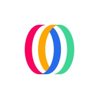
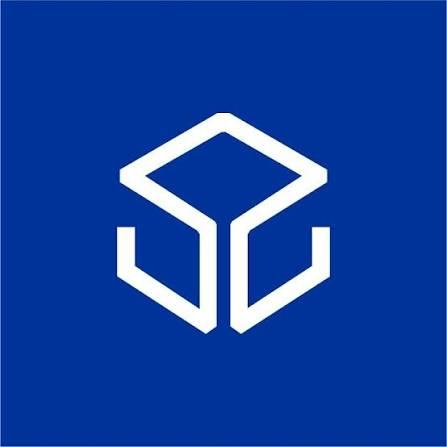

Ngseo Kim
M.S. Student, Cognitive Science, Seoul National University
Research Scientist Intern, OpenMind
kim.ngseo@gmail.com ·
LinkedIn ·
GitHub
About
I am a Research Scientist Intern at OpenMind with a background in Physical AI, Natural Language Processing,
and Computer Security. I am currently an M.S. student at Seoul National University,
advised by Prof. Byoung-Tak Zhang in the Biointelligence Lab. I received my B.E. in Cybersecurity from Ajou University.
Experience
 | OpenMind
Research Scientist Intern (Robot learning) | Sep 2026 – Present |
 | S2W Inc.
Senior Researcher, AI Team (NLP) | Nov 2021 – Feb 2025 |
Publications
Robotics
-
Disentangling Spurious Correlations in Vision-Language-Action Models via Predicting Domain-Invariant Latent Lookahead.
Junghyun Kim*, Ngseo Kim*, Chungwoo Lee, Seoyeon Lee, Woo-Jeong Baek, Adam Zhou, Chip Huyen, Jun Ki Lee, Gi-Cheon Kang, Byoung-Tak Zhang.
Conference on Robot Learning (CoRL) 2026.
RSS 2026 SemRob Workshop. (Spotlight)
-
MicroVLA: Edge-Deployable Vision-Language-Action at 10M Parameters.
Ngseo Kim, Junghyun Kim, Gi-Cheon Kang, Youngjae Yu, Byoung-Tak Zhang.
RSS 2026 Workshop on Lab to Production. (Spotlight)
-
Scaling Language-Conditioned Policies with Fast and Lightweight Architectures.
Junghyun Kim, Gi-Cheon Kang, Kyuhwan Shim, Ngseo Kim, Jun Ki Lee, Byoung-Tak Zhang.
Korea Computer Congress (KCC) 2025, KIISE. (Domestic)
-
Generalizing Language-Conditioned Robotic Policies via Large Language Models.
Junghyun Kim, Gi-Cheon Kang, Kyuhwan Shim, Ngseo Kim, Jun Ki Lee, Byoung-Tak Zhang.
Korea Computer Congress (KCC) 2025, KIISE. (Domestic)
Natural Language Processing
-
Universal NER v2: Towards a Massively Multilingual Named Entity Recognition Benchmark.
Terra Blevins, Stephen Mayhew, Marek Šuppa, Hila Gonen, Shachar Mirkin, Vasile Pais, Kaja Dobrovoljc, Voula Giouli, Jun Kevin, Eugene Jang, Ngseo Kim, Jeongyeon Seo, Xenophon Gialis, Yuval Pinter.
LREC 2026.
Interpretability
-
Locality-aware Concept Bottleneck Model.
Sujin Jeon, Hyundo Lee, Ngseo Kim, Sanghack Lee, Byoung-Tak Zhang, Inwoo Hwang.
arXiv preprint.
Computer Security
-
SWIFT: Robust Code Watermarking via Structural Canonicalization and LLM-Based Rewriting.
Inwook Hwang, Ngseo Kim, Seungwon Shin, Myoungsung You.
Annual Computer Security Applications Conference (ACSAC) 2026.
* Equal contribution.
Awards
2026 Humanoid Challenge — Grand Prize (1st Place, 12 teams)
Team ROBI, Seoul National University. Hosted by MOTIE, held alongside RoboCup 2026 Incheon. | Jul 2026 |
Last updated: September 2026